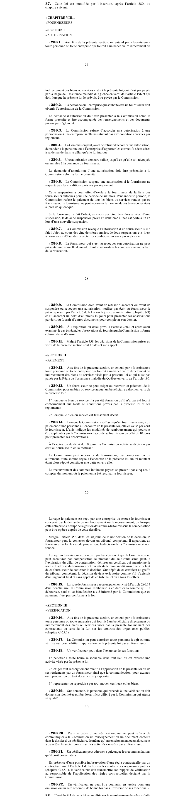

art-87-LMRSST : insertion après art. 280 LATMP
Article modificateur de la LMRSST (L.Q. 2021, c. 27).
- Insère un nouvel article dans la Loi sur les accidents du travail et les maladies professionnelles (RLRQ c.
📄 PDF officiel (page 27) · 🌐 LegisQuébec
Texte officiel
Cette loi est modifiée par l’insertion, après l’article 280, du chapitre suivant : « CHAPITRE VIII.1 « FOURNISSEURS « SECTION I « AUTORISATION
« 280.1. Aux fins de la présente section, on entend par « fournisseur » toute personne ou toute entreprise qui fournit à un bénéficiaire directement ou indirectement des biens ou services visés à la présente loi, qui n’est pas payée par la Régie de l’assurance maladie du Québec en vertu de l’article 196 et qui doit, lorsque la présente loi le prévoit, être payée par la Commission.
« 280.2. La personne ou l’entreprise qui souhaite être un fournisseur doit obtenir l’autorisation de la Commission.
La demande d’autorisation doit être présentée à la Commission selon la forme prescrite et être accompagnée des renseignements et des documents prévus par règlement.
« 280.3. La Commission refuse d’accorder une autorisation à une personne ou à une entreprise si elle ne satisfait pas aux conditions prévues par règlement.
« 280.4. La Commission peut, avant de refuser d’accorder une autorisation, demander à la personne ou à l’entreprise d’apporter les correctifs nécessaires à sa demande dans le délai qu’elle lui indique.
« 280.5. Une autorisation demeure valide jusqu’à ce qu’elle soit révoquée ou annulée à la demande du fournisseur.
La demande d’annulation d’une autorisation doit être présentée à la Commission selon la forme prescrite.
« 280.6. La Commission suspend une autorisation si le fournisseur ne respecte pas les conditions prévues par règlement.
Cette suspension a pour effet d’exclure le fournisseur de la liste des fournisseurs autorisés pour une période de six mois. Pendant cette période, la Commission refuse le paiement de tous les biens ou services rendus par ce fournisseur. Le fournisseur ne peut recouvrer le montant de ces biens ou services auprès de quiconque.
Si le fournisseur a fait l’objet, au cours des cinq dernières années, d’une suspension, le délai de suspension prévu au deuxième alinéa est porté à un an lors d’une nouvelle suspension.
« 280.7. La Commission révoque l’autorisation d’un fournisseur, s’il a fait l’objet, au cours des cinq dernières années, de deux suspensions et s’il est à nouveau en défaut de respecter les conditions prévues par règlement.
« 280.8. Le fournisseur qui s’est vu révoquer son autorisation ne peut présenter une nouvelle demande d’autorisation dans les cinq ans suivant la date de la révocation.
« 280.9. La Commission doit, avant de refuser d’accorder ou avant de suspendre ou révoquer une autorisation, notifier par écrit au fournisseur le préavis prescrit par l’article 5 de la Loi sur la justice administrative (chapitre J-3) et lui accorder un délai d’au moins 10 jours pour présenter ses observations par écrit ou fournir d’autres documents pour compléter son dossier.
« 280.10. À l’expiration du délai prévu à l’article 280.9 et après avoir examiné, le cas échéant, les observations du fournisseur, la Commission informe celui-ci de sa décision.
« 280.11. Malgré l’article 358, les décisions de la Commission prises en vertu de la présente section sont finales et sans appel. « SECTION II « PAIEMENT
« 280.12. Aux fins de la présente section, on entend par « fournisseur » toute personne ou toute entreprise qui fournit à un bénéficiaire directement ou indirectement des biens ou services visés par la présente loi et qui n’est pas payée par la Régie de l’assurance maladie du Québec en vertu de l’article 196.
« 280.13. Un fournisseur ne peut exiger ou recevoir un paiement de la Commission pour un bien ou service auquel un bénéficiaire a droit en vertu de la présente loi :
1° lorsque le bien ou service n’a pas été fourni ou qu’il n’a pas été fourni conformément aux tarifs ou conditions prévus par la présente loi et ses règlements;
2° lorsque le bien ou service est faussement décrit.
« 280.14. Lorsque la Commission est d’avis qu’un fournisseur a reçu un paiement d’une personne à l’encontre de la présente loi, elle en avise par écrit le fournisseur. L’avis indique les modalités de remboursement qui pourront être appliquées par la Commission et accorde au fournisseur un délai de 10 jours pour présenter ses observations.
À l’expiration du délai de 10 jours, la Commission notifie sa décision par écrit au fournisseur, en la motivant.
La Commission peut recouvrer du fournisseur, par compensation ou autrement, toute somme reçue à l’encontre de la présente loi, un tel montant étant alors réputé constituer une dette envers elle.
Le recouvrement des sommes indûment payées se prescrit par cinq ans à compter du moment où le paiement a été reçu par le fournisseur.
Lorsque le paiement est reçu par une entreprise où exerce le fournisseur concerné par la demande de remboursement ou le recouvrement, ou lorsque cette entreprise s’occupe de la gestion des affaires du fournisseur, la compensation peut être opérée auprès de cette dernière.
Malgré l’article 358, dans les 30 jours de la notification de la décision, le fournisseur peut la contester devant un tribunal compétent. Il appartient au fournisseur, selon le cas, de prouver que la décision de la Commission est non fondée.
Lorsqu’un fournisseur ne conteste pas la décision et que la Commission ne peut recouvrer par compensation le montant dû, la Commission peut, à l’expiration du délai de contestation, délivrer un certificat qui mentionne le nom et l’adresse du fournisseur et qui atteste le montant dû ainsi que le défaut de ce fournisseur de contester la décision. Sur dépôt de ce certificat au greffe du tribunal compétent, la décision devient exécutoire comme s’il s’agissait d’un jugement final et sans appel de ce tribunal et en a tous les effets.
« 280.15. Lorsque le fournisseur a reçu un paiement visé à l’article 280.13 d’un bénéficiaire, la Commission rembourse à ce dernier la somme qu’il a déboursée, sauf si ce bénéficiaire a été informé par la Commission que ce paiement n’est pas conforme à la loi. « SECTION III « VÉRIFICATION
« 280.16. Aux fins de la présente section, on entend par « fournisseur » toute personne ou toute entreprise qui fournit à un bénéficiaire directement ou indirectement des biens ou services visés par la présente loi incluant des contractants au sens de la Loi sur les contrats des organismes publics (chapitre C-65.1).
« 280.17. La Commission peut autoriser toute personne à agir comme vérificateur pour vérifier l’application de la présente loi par un fournisseur.
« 280.18. Un vérificateur peut, dans l’exercice de ses fonctions :
1° pénétrer à toute heure raisonnable dans tout lieu où est exercée une activité visée par la présente loi;
2° exiger tout renseignement relatif à l’application de la présente loi ou de ses règlements par un fournisseur ainsi que la communication, pour examen ou reproduction de tout document s’y rapportant;
3° représenter ou reproduire par tout moyen ces lieux et les biens.
« 280.19. Sur demande, la personne qui procède à une vérification doit donner son identité et exhiber le certificat délivré par la Commission qui atteste sa qualité.
« 280.20. Dans le cadre d’une vérification, nul ne peut refuser de communiquer à la Commission un renseignement ou un document contenu dans le dossier d’un bénéficiaire, de même qu’un renseignement ou un document à caractère financier concernant les activités exercées par un fournisseur.
« 280.21. Un vérificateur peut adresser à quiconque les recommandations qu’il croit convenables.
En présence d’une possible inobservation d’une règle contractuelle par un contractant visé à l’article 1 de la Loi sur les contrats des organismes publics (chapitre C-65.1), le vérificateur doit transmettre son rapport de vérification au responsable de l’application des règles contractuelles désigné par la Commission.
« 280.22. Un vérificateur ne peut être poursuivi en justice pour une omission ou un acte accompli de bonne foi dans l’exercice de ses fonctions. ».
Texte de l’article 87 LMRSST, extrait de la couche texte du PDF officiel (page 27), sans OCR ni retouche. La capture ci-dessous et le PDF font foi.
{kind=link}

Toucher l'image pour l'agrandir🔗 Ouvrir a cette page : LMRSST.pdf : page 27
- Insère un nouvel article dans la Loi sur les accidents du travail et les maladies professionnelles (RLRQ c. A-3.001), après l'art. 280.
Portée et effet
Adopté dans le cadre de la réforme de 2021 modernisant le régime de santé et de sécurité du travail, l'article 87 de la LMRSST insère une nouvelle disposition dans la LATMP, en lien avec art. 280 LATMP. Le texte en vigueur de la disposition visée intègre désormais cette modification ; le libellé exact figure dans la capture officielle ci-dessus. Le chapitre I de la LMRSST réforme la LATMP : comité scientifique des maladies professionnelles, réadaptation et retour au travail, indemnités, procédures et recours.
La jurisprudence porte sur la disposition modifiée, art. 280 LATMP, et non sur l'article modificateur lui-même (les décisions et leurs PDF sont rassemblés sur la page de cet article).
Voir aussi
- 🎯 Article(s) modifié(s) : art. 280 LATMP · l'employeur inscrit dans un registre les accidents du travail qui surviennent dans son établissement et qui ne rendent pas le travailleur incapable d'exercer son emploi au-deli de la journée au cours de laquelle s‘est manifestée sa lésion professionnelle;.
- 🗓️ Entrée en vigueur : 6 avril 2022 (partiel : voir art. 313 ¶1) (voir art. 313 LMRSST)
- 📚 Chapitre : Chap. I : modifications à la LATMP
- ↑ Loi : LMRSST
Pages qui pointent ici (3)
- art-122-LMRSST : refonte des définitions de l'art. 1 LSST Recueil législatif
- art-280-LATMP : employeur inscrit registre accidents Recueil législatif
- LMRSST : Chapitre I : Modifications à la LATMP Recueil législatif